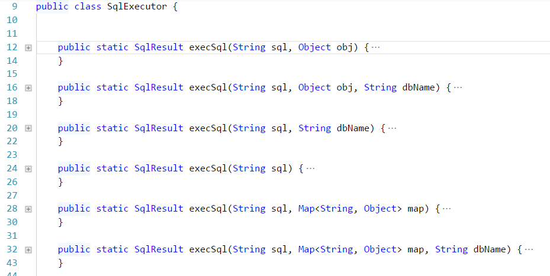

常规的model的写法如下：
package qeorm.test.model; import qeorm.ModelBase; import qeorm.annotation.Column; import qeorm.annotation.OneToOne; import qeorm.annotation.Table; /** * 如果想使用 orm 的话，让model继承qeorm.ModelBase，并且添加@Table 注解，这个model就自动有了以下的功能 * select 根据当前类的条件筛选数据，返回当前类List * selectWithrelation 在select的基础上，也会返回有@OneToOne和@OneToMany的字段的值 * selectOne 返回一个实例 * selectOneWithrelation * count * save * insert * update 注意，当update时，where条件为 id={id} */ @Table( //masterDbName,写库，此配置可以为空，当为空时，默认取当前MODEL命名空间的第三的值+Master masterDbName = "defaultMaster" , //slaveDbName，读库， 规则同 masterDbName slaveDbName = "userSlave", // tableName ，对应的表的名字，如果为空，默认为 类 的名称 tableName = "novel", // primaryKey 数据库主键字段，如果为空，默认为id primaryKey = "id", //where, model执行select 、delete 、count时的where条件，如果为空，默认为 id={id} where = " id={id} and name like '%{name}%'" ) public class Novel extends ModelBase { //如果字段没有注解，则默认为此字段名称与数据库字段名一致 // model 字段类型必须为 `大写` 的类型，只有这样，此字段的默认值才为null private Integer id; private String name; //@Column 当数据库字段同model字段名称不相同时，需配置此项 @Column("name") private String myName; private String author; private Integer tag_id; private String desc; //@OneToOne 当某字段是另外一个类时，添加此注解，意思是：当前类的【self】字段对应另外一个类的【mapperBy】字段 //@OneToMany 同上 @OneToOne(self = "tag_id", mappedBy = "id") private Tag tagInfo; @OneToOne(self = "id", mappedBy = "id") private Novel self; // @Transient 当某字段与数据库字段没有对应关系时，字段需加上此注解 @Transient private String other; .... }
package qeorm.test.news.dao; import qeorm.test.model.Novel; import java.util.List; public interface INovelDao { List<Novel> getNovelList(Novel novel); //如果参数时基本类型，则必须用 @qeorm.annotation.SqlParam注解标注参数名称 List<UserStar> list(@SqlParam("userId") Integer userId, @SqlParam("roomIds") Integer[] roomIds); }
对应的xml配置文件的写法
<?xml version="1.0" encoding="UTF-8"?> <!-- 根节点 必须 是sqlConfigs nameSpace：必须，为某个dao的 fullName dbName：数据库组名称，可以为空，默认为 nameSpace的第三部分，此例中默认为：news --> <sqlConfigs dbName="default" nameSpace="qeorm.test.news.dao.INovelDao"> <!-- id：必须，对应nameSpace对应的dao的方法名 dbName：可选，如果此sql为读操作，则默认为 父dbName+Master，如果是写操作，默认为父dbName+Slave 小贴士：qeorm会自动分析sql语句，判断是读操作还是写操作，然后在相应的 master或slave库上执行 --> <sqlConfig id="getNovelList" > <!-- 如果想对参数做一些处理，则可以添加这个配置，也可以添加多个配置 key : 参数名 class：处理参数的类，必须实现 qeorm.intercept.IFunIntercept 接口 --> <paramIntercepts> <paramIntercept key="uid" class="Qe.Core.paramIntercept.UserParamIntercept"/> </paramIntercepts> <!-- qeorm会自行分析{xxx}，当参数中有此参数时，此条件生效，否则会无视此条件 --> <sql> <![CDATA[ select * from `novel` where name like '%{name}%' and id in ({ids}) order by {oo} ]]> </sql> <!--当需要返回嵌套对象时，需要sqlIntercepts配置，可以为空--> <sqlIntercepts> <!-- 一个 sqlIntercepts 下可以有多个 sqlConfig extend:当是select语句时，必须项，有三个可选值，分别为：extend one2One one2Many relationKey：必须项，标识对应关系，以本例为例，意思是 父sql的tag_id 和 子sql的id是对应关系 fillKey：表示本sql返回的数据要填充到父类的哪个字段上，当extend为extend时，此项为空 --> <sqlConfig extend="one2One" relationKey="tag_id|id" fillKey="tagInfo"> <sql> select * from `tag` where id in ({tag_id}) </sql> </sqlConfig> </sqlIntercepts> <!-- 如果想对sql返回值做一些处理，则可以添加这个配置，也可以添加多个配置 key : 参数名 class：处理参数的类，必须实现 qeorm.intercept.IFunIntercept 接口 --> <funIntercepts> <funIntercept key="uid" class="Qe.Core.funIntercept.UserFunIntercept"/> </funIntercepts> </sqlConfig> </sqlConfigs>
//配置 DataSource，与常规的没有区别，
<bean id="masterDataSource" class="com.alibaba.druid.pool.DruidDataSource"
init-method="init" destroy-method="close">
<property name="url" value="${jdbc.master.url}"/>
<property name="driverClassName" value="${jdbc.master.driver}"/>
<property name="username" value="${jdbc.master.username}"/>
<property name="password" value="${jdbc.master.password}"/>
.....
</bean>
<bean id="slaveDataSource" class="com.alibaba.druid.pool.DruidDataSource"
init-method="init" destroy-method="close">
........
</bean>
<bean id="userMasterDataSource" class="com.alibaba.druid.pool.DruidDataSource"
init-method="init" destroy-method="close">
........
</bean>
<bean id="userSlaveDataSource" class="com.alibaba.druid.pool.DruidDataSource"
init-method="init" destroy-method="close">
........
</bean>
<!--
用qeorm管理数据库事务
-->
<bean class="qeorm.TransactionalManager"/>
<!--配置qeorm要扫描的接口以及xml文件-->
<bean class="qeorm.MapperScanner">
<property name="basePackage" value="com.dankegongyu.**.dao"/>
<property name="mapperLocations" value="classpath*:com/dankegongyu/**/dao/*.xml"/>
<!--此项默认为3，可以不配置-->
<property name="dsIdenty" value="3"/>
</bean>
<!--配置 qeorm 需要的数据源-->
<bean class="qeorm.SqlSession">
<!-- qeorm 的数据源都是成对出现的，即 xxxMaster xxxSlave，此项是设置默认的数据库源-->
<property name="defaultDataSource" value="default"/>
<property name="dataSources">
<map>
<entry key="defaultMaster" value-ref="masterDataSource"/>
<entry key="defaultSlave" value-ref="slaveDataSource"/>
<entry key="userSlave" value-ref="userSlaveDataSource"/>
<entry key="userMaster" value-ref="userSlaveDataSource"/>
<entry key="ficoMaster" value-ref="ficoMasterDataSource"/>
<entry key="ficoSlave" value-ref="ficoSlaveDataSource"/>
<entry key="laputaMaster" value-ref="laputaMasterDataSource"/>
<entry key="laputaSlave" value-ref="laputaSlaveDataSource"/>
</map>
</property>
</bean>
只要在相应上方法上添加 @qeorm.annotation.Transactional 即可
某些时候，可能orm 和xml等方式都不能满足需求，需要靠手写sql来实现相关功能，上demo
@Autowired
public qeorm.SqlSession sqlSession;
//开启事务
sqlSession.beginTransaction();
//回滚事务
sqlSession.beginTransaction();
//提交事务
sqlSession.commit();
//获取spring data 的 jdbcTemplate
sqlSession.getJdbcTemplate("userMaster")
//执行sql,sql语句参考 xml 中的sql写法，参数也是用{xxx}标识，也是根据map中是否有有值自动取舍
qeorm.SqlExecutor.execSql(String sql, Map<String, Object> map, String dbName)
qeorm.SqlExecutor.execSql 重载
